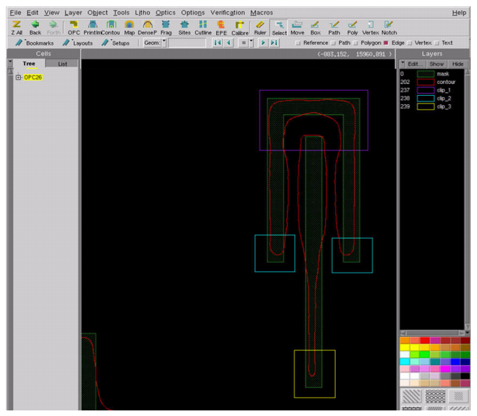

In this procedure,
you will set up a layout file for use with the Calibre ContourCal
tool. When you have completed this procedure, you have a layout
file that contains contour and clip information.
Procedure
- Open a layout containing the
test pattern features.
The layout file needs to contain
both the CD features and the contour features.
You can use in
Calibre WORKbench to create a combined test pattern and contour
feature layout file. Remember to use shift coordinates so that the two
layouts do not overlap each other.
- Add one or more contour layers.
If you have a file with
contour layers that correspond to your design, use the menu
item to overlay contour layer files into the test pattern file.
If you did not receive
a layout with contours on it from your SEM vendor, you can add your
own contours. The contours can be either paths or polygons.
Wire-type contours are
created as objects of type “wire,” with a pathtype of 0 and a width
of 0.
CAUTION: When
you use wire type contours, verify that Calibre WORKbench is not
configured to convert paths to polygons. Check the tab. If “Convert paths
to polygons” is selected, Calibre WORKbench silently adjusts your
contours. This can lead to unexpected results.
Polygon-type contours are
created as normal polygons (contiguous shapes with no crossovers).
Any use of polygon-type contours
should be inspected to make sure they are legal polygons.
- Record the contour layer number.
For each contour layer you
add, note the layer number. This will be used as its contour layer
number during the creation of the CLI file.
- Add clip layer(s).
The layout file needs one or
more “clip layers” added to it. (Layer numbers are arbitrary.) Model
calibration uses the clips drawn on the clip layers to identify
particular contours and corresponding drawn mask features.
To weight multiple contours
with different weights, use a separate clip layer for each weight.
Clips can be used to select
only parts of a contour for calibration use. For example, if a clip
contains only line ends, then the 1D portions of the contour will
be omitted, emphasizing the extreme 2D nature of contour based calibration
that is desired for the model.
Clips can also be used to screen
out erroneous portions of polygon-type contours (Figure 1).
Figure 1. Multiple Clips